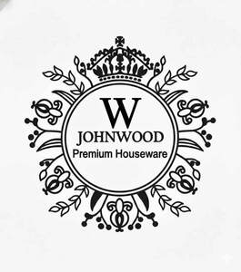

Trade Mark Journal No.2026/005 30 January 2026
UK00004322119 11 January 2026 (21)

- Class 21
- Plastic bottles; Plastic cups; Plastic buckets; Plastic plates; Tablemats of plastic; Planters of plastic; Plastic coasters; Cups of paper or plastic; Plastic funnels; Plastic water bottles; Household plastic gloves; Plastic bowls [household containers]; Plastic molds for household use in making soap; Plastic bag holders for household use; Disposable lids for household containers; Household containers; Trays [household]; Disposable aluminum foil containers for household purposes; Disposable aluminium foil containers for household purposes; Lockable non-metal household containers for food; Household utensils; Rubber household gloves; Household containers of precious metal; Non-metal recycling bins for household use; Household or kitchen containers; Household gloves; Metal baskets for household purposes; Trash containers for household use; Rubber gloves for household use; Squeegees [for household use]; Heat-insulated containers for household use; Anti-static cloths for household use; Graters [household utensils]; Baskets of common metal for household use; All-purpose portable household containers; Household containers for storing pet food; Containers for household use; Plastic containers for dispensing food to pets; Dumpling moulds for household use; Sifters [household utensils]; Trays of paper, for household purposes; Cast stone containers for household; Laundry balls for use as household utensils; Containers for household or kitchen use; Canning rubber for household purposes; Household or kitchen utensils; Colanders for household use; Cinder sifters [household utensils]; Plastic bathtubs for children; Sieves [household utensils]; Dishes [household utensils]; Compost containers for household use; Foil food containers; Plastic containers for dispensing drink to pets; Food storage containers; Containers for bird food; Thermal insulated containers for food or beverage; Thermal insulated containers for food or beverages; Glass lids for industrial packaging containers; Industrial packaging containers of glass; Thermally insulated containers for food; Reusable silicone food covers; Heat retaining containers for food; Food containers for pet animals; Plastic water bottles [empty]; Reusable plastic water bottles sold empty; Glass containers; Double heat insulated containers for food; Industrial packaging containers of porcelain; Thermal insulated bags for food or beverages; Insulated containers for beverage cans, for domestic use; Drinks containers; Thermal insulated tote bags for food or beverages; Food preserving jars of glass; Plastic buckets for storing bath toys; Plastic bath racks [caddies]; Plastic bowls [basins]; Plastic bins [dustbins]; Plastic lids for plant pots; Foldable bath tubs for babies; Inflatable bath tubs for babies; Wash tubs; Rinsing tubs; Plastic ice cube moulds; Cookware; Steamers [cookware]; Aluminium cookware; Cookware [pots and pans]; Tableware, cookware and containers; Cookware for use in microwave ovens; Bakeware; Griddles [cooking utensils]; Cookware and tableware, except forks, knives and spoons; Non-electric griddles [cooking utensils]; Griddles [non-electric cooking utensils]; Spatulas [kitchen utensils]; Aluminium bakeware; Cookware, except forks, knives and spoons; Cooking utensils; Cooking pans; Cooking pots and pans [non-electric]; Non-electric cooking pots and pans; Grills [cooking utensils]; Skillets; Kitchen utensils of silicon; Kitchen utensils; Ovenware; Tenderizers [kitchen utensils]; Cooking pans [non-electric]; Non-electric cooking pans; Cooking utensils, non-electric; Oven-to-table tableware; Molds [kitchen utensils]; Baking utensils; Basting spoons [cooking utensils]; Cooking pots for use in microwave ovens; Simmer rings [cooking utensils]; Aluminium moulds [kitchen utensils]; Saucepans; Moulds [kitchen utensils]; Wire baskets [cooking utensils]; Saucepans (Earthenware -); Earthenware saucepans; Cooking graters; Grills in the nature of cooking utensils; Bakeware [not toys]; Ceramic tableware; Turners (kitchen utensil); Cooking pots [non-electric]; Pressure cooking saucepans, non-electric; Graters [non-electric household utensils]; Non-electric pressure cooking saucepans; Skillets (Non-electric -); Cooking pots; Tableware; Frying pans [non-electric]; Non-electric frying pans; Trivets [table utensils]; Cooking pots, non-electric / Non-electric cooking pots; Mixing spoons [kitchen utensils]; Dishware; Scourers for saucepans; Tableware, other than knives, forks and spoons; Portable pots and pans for camping; Skewers (cooking utensil); Kitchen graters; Dinnerware; Cooking utensils for barbecue use; Disposable paperboard bakeware; Cooking utensils for use with domestic barbecues; Kitchen utensils, not of precious metal; Bone china tableware [other than cutlery]; Spatulas for kitchen use; Dishes for microwave ovens; Couscous cooking pots, non-electric; Tortilla presses, non-electric [kitchen utensils]; Roaster pans; Metal pans; Cooking strainers; Frying pans; Pans (Frying -); Egg separators [kitchen utensils]; Tableware, except forks, knives and spoons; Dinnerware of porcelain; Tableware of porcelain; Jewelry dishes; Stir-fry pans; Non-electric rice cooking pots; Stemware; Coasters (tableware); Glass tableware; Drinkware; Glassware; Cutlery trays; Scoops [tableware]; Beverageware; Decorative chinaware; Platters; Trivets; Beverage glassware; Decorative porcelain ware; Serving utensils [pastry servers]; Pewter goblets; Tea services [tableware]; Serving platters; Picnic crockery; Serving utensils [pie servers]; Crockery; Chinaware; Baking dishes made of porcelain; Porcelain ware; Coffee services [tableware]; Utensil jars; Holloware; Serving scoops [household or kitchen utensil]; Baking dishes made of earthenware; Plastic plates [dishes]; Compostable bowls; Ceramic hollowware; Decorative plates; Casseroles [dishes]; Crockery made of porcelain; Goblets; Dishes; Decorative china; Glass dishes; Crystal [glassware]; Serving dishes; Cruets; Compostable plates; Porcelain mugs; Mugs of porcelain; Insulated lids for plates and dishes; Painted glassware; Glassware (Painted -); Baking dishes; Serving platters of precious metal; Bowls for floral decorations; Earthenware mugs; Basting spoons, for kitchen use; Spoons (Basting -), for kitchen use; China ornaments; Cutlery rests; Dessert plates; Porcelain cake decorations; China mugs; Mugs of china; Tea services in the nature of tableware; Gratin dishes; Baking dishes made of glass; Mugs; Glass mugs; Ceramic mugs; Cups and mugs; Beer mugs; Glasses, drinking vessels and barware; Insulated mugs; Beverage stirrers; Tumblers for use as drinking glasses; Travel mugs; Beverage coolers [containers]; Coffee mugs; Glass carafes; Drinking mugs made of porcelain; Tumblers [drinking vessels]; Glass flasks [containers]; Tumblers; Containers for beverages; Carafes; Glass decanters; Portable beverage coolers; Mugs made of ceramic materials; Insulating sleeve holder for beverage cups; Heat-insulated containers for beverages; Mugs made of plastic; Glass flasks; Portable beverage container holders; Glass cups; Portable beverage dispensers; Vacuum mugs; Beverage urns, non-electric; Cocktail glasses; Mugs made of porcelain; Mugs made of earthenware; Insulated bottles [flasks]; Drinking steins; Mug racks; Holders for tumblers; Insulating sleeve holders for beverage cans; Beer glasses; Drinking glass holders; Mugs made of china; Margarita glasses; Pilsner drinking glasses; Pilsner glasses; Porcelain coasters; Decanters; Glasses [drinking vessels]; Glass vases; Stirrers (Drink -); Beer steins; Glass bottles; Tankards; Drinking goblets; Dispensers for liquids for use with bottles; Glasses [receptacles]; Steins; Glass stoppers for bottles; Beverages (Heat insulated containers for -); Pint glasses; Pewter tankards; Pots; Pots for plants; Pots for flowers; Earthen pots; Flower pots; Pots (Flower -); Plant pots; Tea pots; Coffee pots; Saucers for flower pots; Incense pots; Pepper pots; Glass pots; Porcelain flower pots; Stone pots; Chamber pots; Jam pots; Mustard pots; Shaving pots; Containers for pot pourri; Serving pots; Pot lids; Pot pourri jars; Bases for plant pots; Paper cooking pots; Coffee pots [non-electric]; Non-electric coffee pots; Hot pots, non-electric; Tea pots of precious metal; Cooking pot sets; Flower pot holders; Pot lid racks; Closures for pot lids; Flowerpots; Planters of earthenware; Covers, not of paper, for flower pots; Bowls for plants; Repotting containers for plants; Coffee pots not of precious metal; Urns being vases; Pot holders; Pot scrapers; Earthenware jars; Planters of clay; Planters of pottery; Pot plant support sticks; Boxes of earthenware; Garden gnomes of earthenware; Flower vases; Japanese style tea-serving pots (kyusu); Vases; Pot cleaning brushes; Syringes for watering flowers and plants; Earthenware floor vases; Flower bowls; Non electric coffee pots not of precious metal; Pot stands; Planters of porcelain; Clay floor vases; Containers for flowers; Roses for watering cans; Kitchen jars; Glass flowerpots; Japanese style tea-serving pots of precious metal (kyusu); Enamelled jars; Figurines of porcelain, ceramic, earthenware, terra-cotta or glass for cakes; Kitchen containers; Prize cups of porcelain, ceramic, earthenware, terra-cotta or glass; Combined lids for kitchen containers; Urns; Hot pots, not electrically heated; Hot pots [not electrically heated]; Roasting pans; Holders for flowers and plants [flower arranging]; Ritual flower vases; Commemorative statuary cups of porcelain, ceramic, earthenware, terra-cotta or glass; Teapots; Glass pans; Figurines of porcelain, ceramic, earthenware, terra-cotta or glass; Sprinklers for watering flowers and plants; Statues of porcelain, ceramic, earthenware, terra-cotta or glass; Heat-insulated containers; Toothbrush containers; Soap containers; Containers for ice; Pomanders [containers]; Containers for cosmetics; Lotion containers, empty, for household use; Refuse containers.
MOATISAM JAVED